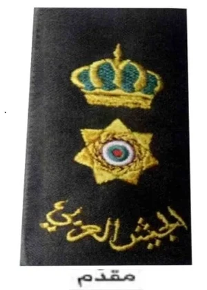
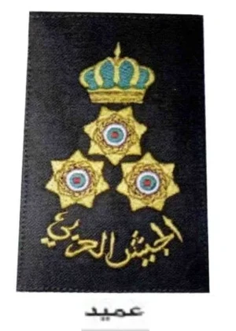
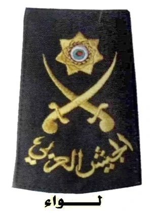
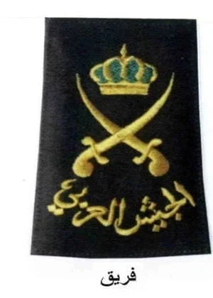
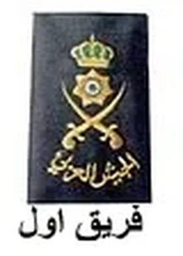
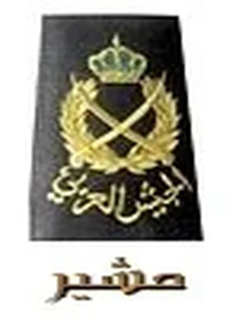

نجمة واحدة يعلوها التاج

ثلاثة نجوم بشكل مثلث واحد في الأعلى واثنتان في القاعدة ويعلوها التاج

سيفان متقاطعان يعلوهما نجمة

سيفان متقاطعان ويعلوهما تاج

سيفان متقاطعان ويعلوهما نجمة وتاج

سيفان متقاطعان يحيط بهما اكليل من الغار ويعلوهما التاج الهاشمي